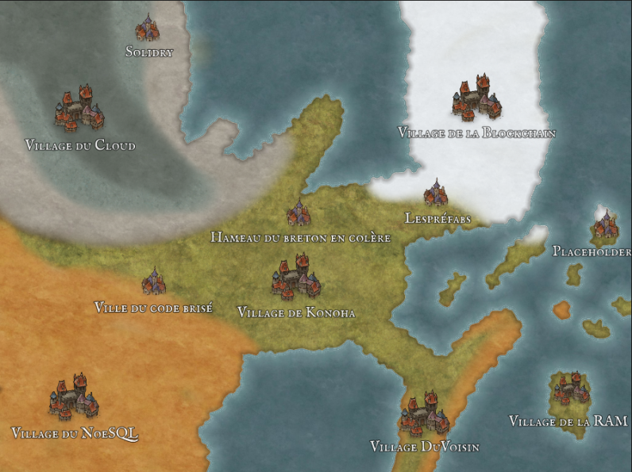

Au cœur du village caché de Konoha, un nouvel habitant avait récemment élu domicile. Son nom était Chatoine, un homme dans la trentaine au charme mystérieux, distingué par des oreilles de chat qui se dressaient fièrement au-dessus de ses cheveux soigneusement coiffés.
Chatoine, avec sa personnalité joyeuse et décontractée, avait rapidement gagné le cœur des villageois. Il se démarquait non seulement par son apparence unique, mais aussi par sa polyvalence. Il avait exercé toutes les professions imaginables, de la boulangerie au métier de forgeron.
Cependant, parmi toutes ses occupations, il avait une passion particulière : enseigner à l'IUT local. En tant que professeur, Chatoine faisait preuve d'une approche décontractée, mais efficace. Ses étudiants l'adoraient pour sa manière ludique d'enseigner, utilisant des anecdotes de ses multiples métiers pour illustrer ses cours.
En dépit de son emploi du temps chargé, Chatoine avait également une passion dévorante pour les jeux vidéo. Il était un fan inconditionnel de "Kingdom Hearts" et "Final Fantasy", plongeant régulièrement dans ces mondes virtuels pour des aventures épiques.
Curieusement, malgré ses goûts vidéoludiques, Chatoine n'avait jamais regardé "JoJo's Bizarre Adventure", un détail qui suscitait souvent l'étonnement de ses amis et collègues.
Son arrivée à Konoha avait apporté une touche de fraîcheur et d'originalité à la vie quotidienne des villageois. Chatoine, avec ses oreilles de chat, ses multiples talents et son amour pour les jeux vidéo, était devenu une figure bien-aimée dans le village, ajoutant une note unique à l'univers de Naruto.
